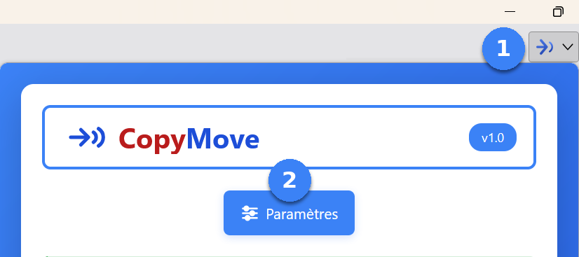
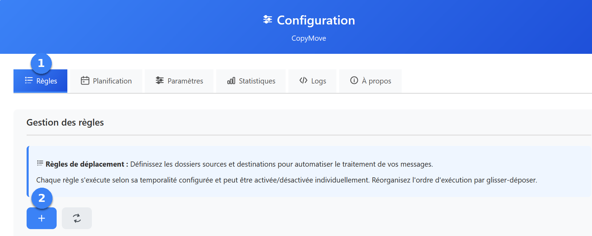
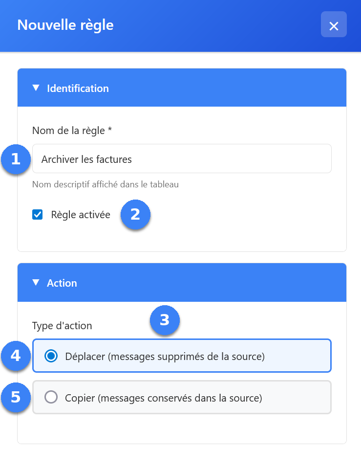
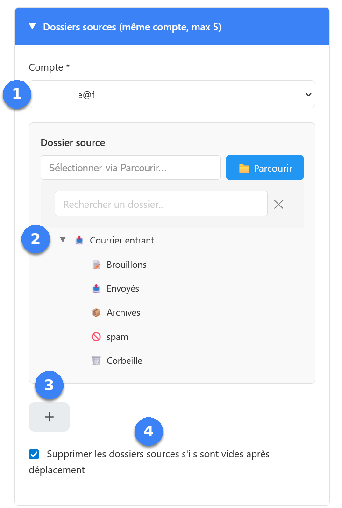
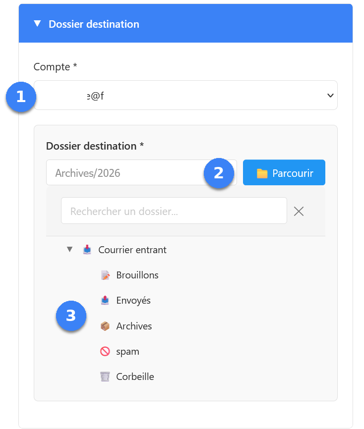
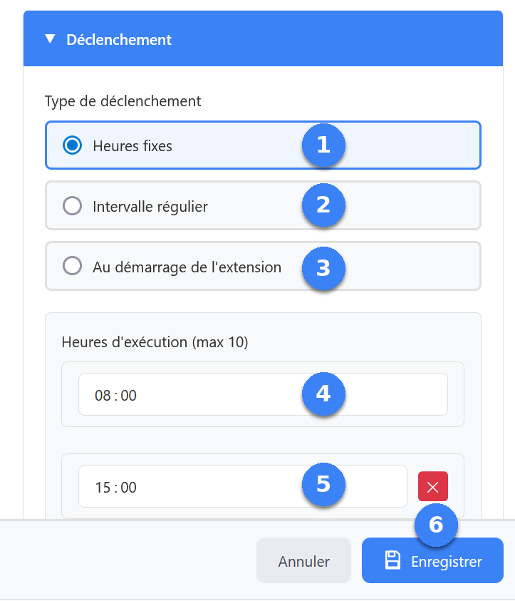
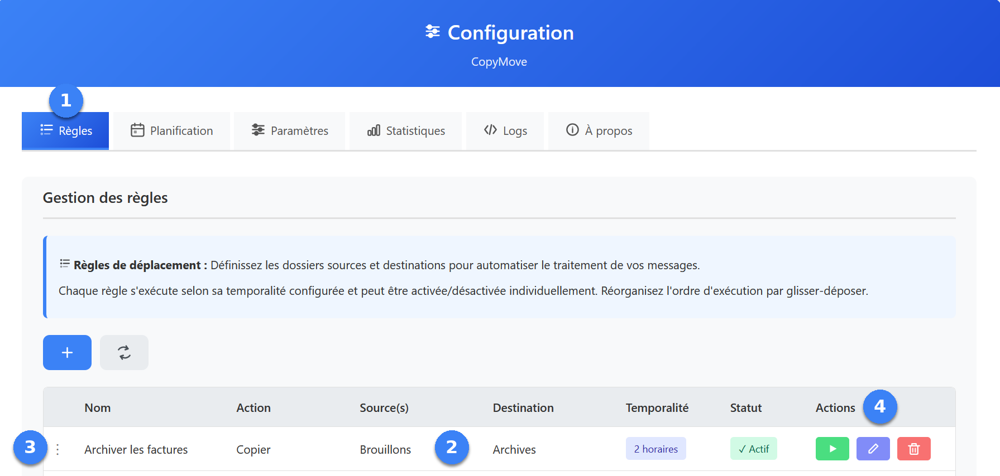
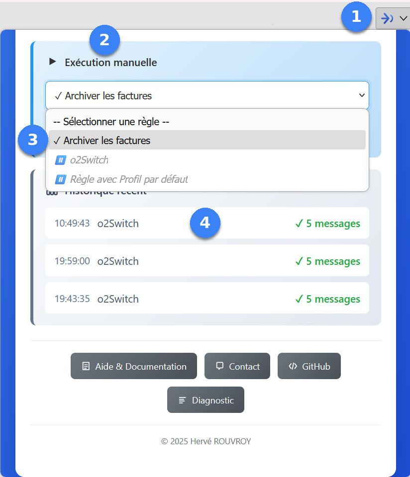

Prérequis
- Thunderbird 115 ou version supérieure
- Extension CopyMove installée dans Thunderbird
1
Ouvrir les paramètres
- Cliquez sur l'icône CopyMove dans la barre d'outils de Thunderbird pour ouvrir le popup
- Cliquez sur le bouton Paramètres

2
Créer une règle
- Vérifiez que l'onglet Règles est actif
- Cliquez sur le bouton + pour ouvrir le panneau de création d'une nouvelle règle

3
Nommer la règle et choisir l'action
- Donnez un nom descriptif à votre règle (ex : Archiver les factures)
- Laissez la case Règle activée cochée pour qu'elle s'exécute automatiquement dès l'enregistrement
- Sous Type d'action, choisissez comment les courriels seront traités
- Déplacer — les courriels sont retirés du dossier source
- Copier — les courriels restent dans le dossier source

4
Définir les dossiers sources
- Sélectionnez le compte de messagerie source
- Choisissez le dossier à traiter dans l'arborescence
- Ajoutez jusqu'à 5 dossiers sources avec le bouton + si nécessaire (tous doivent appartenir au même compte)
- Si vous avez choisi Déplacer à l'étape précédente, vous pouvez cocher Supprimer les dossiers sources s'ils sont vides après déplacement

5
Définir le dossier destination
- Sélectionnez le compte de messagerie destination — il peut être différent du compte source
- Cliquez sur le bouton Parcourir pour ouvrir l'arborescence
- Choisissez le dossier destination dans l'arborescence

6
Configurer le déclenchement
Dans la section Déclenchement, choisissez quand la règle s'exécute :
- Heures fixes — la règle s'exécute aux heures que vous définissez (10 au maximum). Exemple : 4 08:00 et 5 15:00.
- Intervalle régulier — la règle s'exécute toutes les X heures ou minutes (minimum 10 minutes). Exemple : toutes les 2 heures.
- Au démarrage de l'extension — la règle s'exécute une fois après un délai optionnel, décompté depuis le démarrage de Thunderbird. Exemple : 15 minutes après le lancement de Thunderbird. Si l'extension se charge plus tard que Thunderbird lui-même, le délai démarre au chargement réel de l'extension, pas au lancement de Thunderbird.
Une fois votre choix fait, cliquez sur 6 Enregistrer en bas du panneau.

7
Retrouver sa règle dans le tableau de bord
- Retrouvez l'onglet Règles
- La règle nouvellement créée apparaît dans le tableau
- La poignée ⋮ à gauche de la ligne permet de réorganiser l'ordre d'exécution par glisser-déposer
- La colonne Actions regroupe : ▶ Lancer la règle manuellement, ✏️ Éditer ses réglages, 🗑️ Supprimer la règle
Le statut (✓ Actif) se clique directement pour activer ou désactiver la règle.

8
Lancer une règle sans ouvrir les paramètres
Le popup CopyMove offre un raccourci pour exécuter une règle immédiatement, sans ouvrir la fenêtre Paramètres.
- Cliquez sur l'icône CopyMove dans la barre d'outils de Thunderbird
- Parcourez la fenêtre jusqu'à la section Exécution manuelle
- Sélectionnez la règle à exécuter dans la liste
- Le résultat apparaît quelques instants plus tard dans la section Historique récent

Conseil : vérifiez dans votre dossier destination que les courriels
ont bien été copiés ou déplacés. Si le résultat n'est pas celui attendu,
consultez l'onglet Logs pour identifier la cause.
Et ensuite ?
- Documentation — détail de chaque onglet de configuration
- FAQ — réponses aux questions courantes
- Le popup — contrôle rapide et exécution manuelle